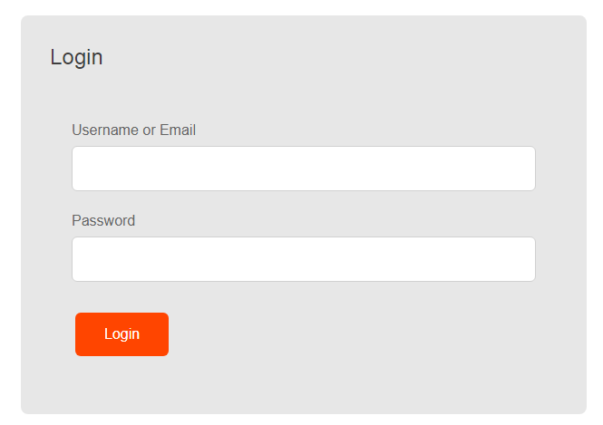

Acest document cuprinde aspectele tehnice si interactiunea cu utilizatorul, ale proiectului ReDat, realizat in coloborare de Mihai Cristian-Laurentiu si Stamate Valentin pentru Tehnologii Web (2021).
Aplicatia Web ReDat, detaliata in acest document, creeaza un spatiu pentru utilizator in care acesta poate grupa,vedea si gestiona topicele (subreddit-urile) favorite, oferite de Reddit printr-un API public. Astfel utilizatorul poate aceesa mai rapid si mai comod subiectele sale de interes.
In continuare vom prezenta o descriere generala a aplicatiei, urmand ca apoi sa fie detaliata interactiunea utlizatorului cu aceasta. Acest document se adreseaza in principal utilizatorului obisnuit, si vizeaza in special principalele functionalitati ale aplicatiei si modul de interactiune cu utlizatorul, pentru a facilita utilizarea aplicatiei.
Aplicatia doreste sa usureze efortul depus de utilizator pentru a accesa subreddit-urile favorite, prin gruparea acestora dupa preferintele stabilite de utilizator si prin usoara genstionare a acestor preferinte.
Aplicatia vine ca o extensie pentru site-ul Reddit, oferind utilizatorului o viziune mai larga asupra celor mai populare topice.
Mai jos sunt functionalitatile pe care aplicatia ReDat le ofera.
Fiind o aplicatie web, ea va rula pe orice browser modern. Astfel aplcatia va putea rula pe toate sistemele de operare ce suporta un browser cum ar fi: Android, IOS, Windows, Linux, etc.
Deoarece aplicatia depinde in mod direct de API-ul oferit de Reddit, orice modificare se va propaga inclusiv in aplicatie, putand-o face nefunctionala.
Un alt lucru il reprezinta datele oferite. Acestea pot oferi informatii insuficiente pentru atragerea utilizatorilor.
Aplicatia ofera o interfata moderna, placuta din punct de vedere vizual pentru a imbunatati experienta utilizatorului. ReDat poate fi folosita atat pe ecrane mari cat si pe browserul telefonului al carui ecran este de dimensiuni mai reduse, oferind in continuare o experienta placuta utilizatorului datorita design-ului responsive.
De asemenea utilizatorul are posibilitatea sa modifice tema de culori pestabilita a aplicatiei, putand opta pentru o tema intunecata. Acest lucru este posibil prin pagina "User profile" din aplicatie, care ofera diferite optiuni de configurare.
Aplicatia este in stansa legatura cu API-ul public oferit de Reddit. La fiecare request vor fi atasate topicele si se va face o selectie bazata pe cele mai populare subreddituri dupa anumite criterii(nr utilizatori, reactii, etc).
Baza de date folosita va fi PostgreSQL deoarece se poate integra usor cu limbajul de programare pentru partea de backend. Un alt motiv fiind suportul gratuit pe platforma Heroku, locul unde va fi hostat backend-ul aplicatiei.
Pentru hostarea partii de frontend se va folosi platforma oferita de Google si anume Firebase. Aceasta este foarte usor de folsoit si este gratuita oferind posibiliatea adaugarii unui domeniu custom.
Frontend-ul va fi scris in HTML5, CSS3 si Javascript fara a folosi alte librarii. Pentru o experianta mai buna aplicatia va folosi fontul Roboto oferit de Google Fonts impreuna cu packetul de iconite.
Pentru backend se va folosi Python impreuna cu libratia Gunicorn pentru a usura prelarea informatiilor dintr-un request http. Arhitectura folosita va fi MVC.
Pentru functionalitatea activarii contului prin mail, aplicatia va folosi protocolul SMTP cu un mail deja existent(gmail).
Partea de backend va functiona ca si un REST API, iar partea de frontend va face requesturi catre acesta. Formatul de primire/transmitere al requesturilor va fi JSON.
Autentificarea utilizatorului se realizeaza in pagina dedicata acestei operatii si presupune completarea campurilor necesare (nume de utilizator sau email, parola) urmand ca apoi utlizatorul sa apese pe butonul "login" si, in cazul in care datele sunt corecte, acesta sa fie redirectionat pe pagina principala (Home). Desigur, autentificarea necesita exista unui cont de utilizator. 
Aceasta operatie presupune creare unui nou cont de utlizator. Utilizatorul completeaza
campurile necesare (nume de utlizator, email, parola, confirmare parola), apasa pe butonul
"register" si, in cazul in care informatiile sunt valide ( nume de utlizator este nou,
email respecta formatul standard, parola corespunde), utilizatorul este redirectionat pe pagina
de confirmare a adresei de email, dupa confirmare, un nou cont de utilizator fiind creat.

Bazat pe topicele alese de utilizator, fie la crearea contului, fie in setari, utlizatorul va putea vedea in pagina home cele mai populare subreddit-uri sub forma unei liste. Fiecare element al listei va contine informatii referitare la subreddit iar utilizatorul va putea schimba intre mai multe tipuri de statistici. Un alt feature important este notificarea in timp real atunci cand subredditul respectiv sufera schimbari (comentariu nou, etc).
Utilizatorul va putea accesa setari asociate contului sau. Astfel el va putea schimba parola, modifica mailul si alte informatii referitoare la contul personal. Tot in pagina de setari va putea modifica topicele preferate si va putea schimba intre tema dark si light.
Interfata aplicatitei este simpla si in acelasi timp moderna deoarece contine concepte curente cum ar fi: colturi rotunjite, folosirea fontului Roboto, comutarea intre temele light si dark, etc, elemente menite sa atraga utilizatorul.
Pentru structurarea layoutului fiecare pagina s-a structurat folosind grid si flex deoarece se poate contrui foarte usor interfete dar si alinierea elementelor interne. Pentru tema light s-au folosit diferite nunante progresive de gri, iar pentru tema dark in mod similar pentru a standardiza culorile si o mai buna mentenanta.
Foile de still css au fost modularizate pentru scalabilitate, fiecare fisier css reprezinta un singur obiect/layout, astfe o modificare(de exemplu un buton) se face intr-un fisier iar modificarile se propaga oriunde este folosit acel fisier. De asemenea, pentru a avea un singur loc un care sunt puse dimensiuni/culori au fost create variabile css.
Aplicaitia este responsive astfel ea poate fi disponibila si pe telefoanele mobile. Pentru a face acest lucru, atunci cand layout-ul ajunge la o lungime minima, el se restructureaza pastrand astfel lungimea paginii cu cea a ecranului.